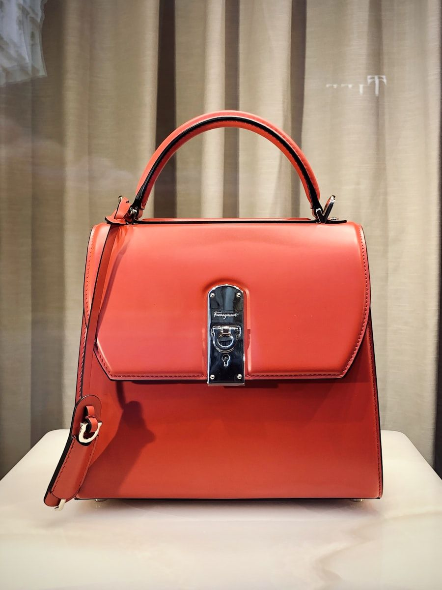
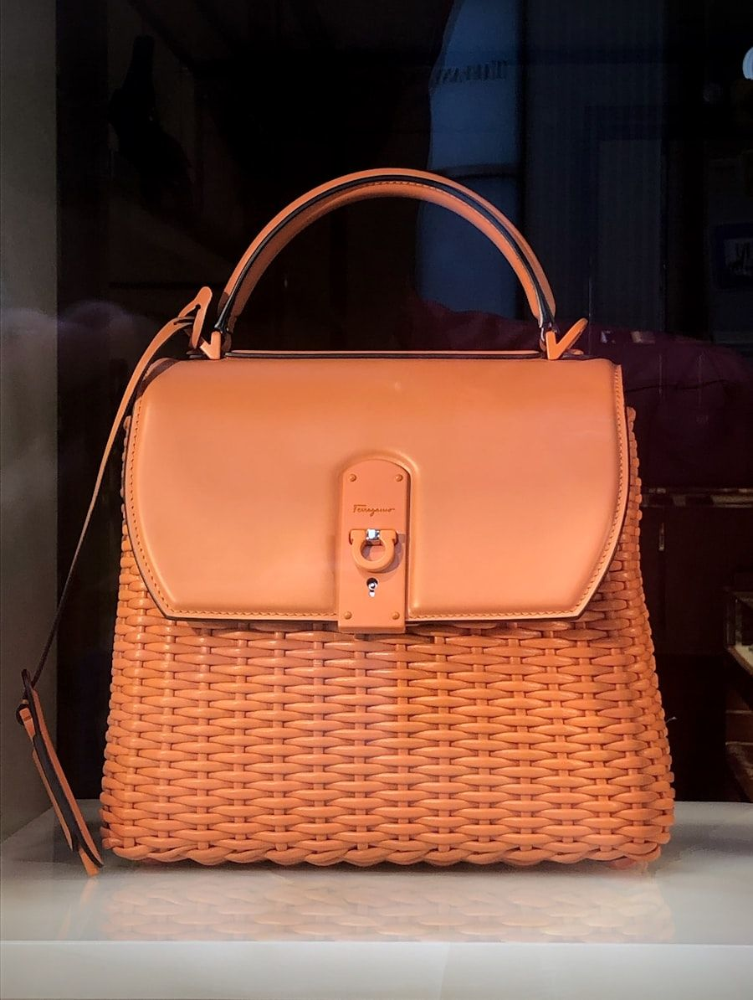
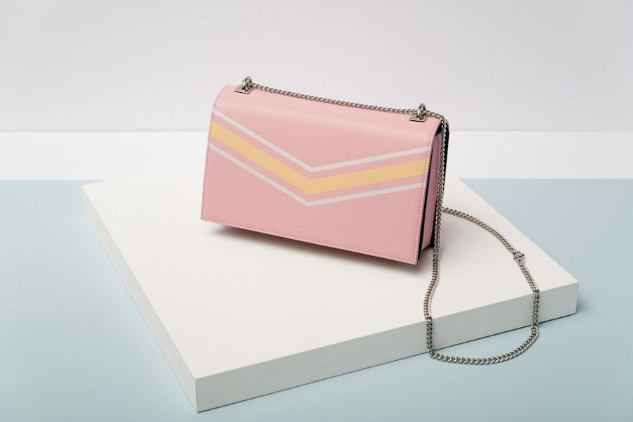
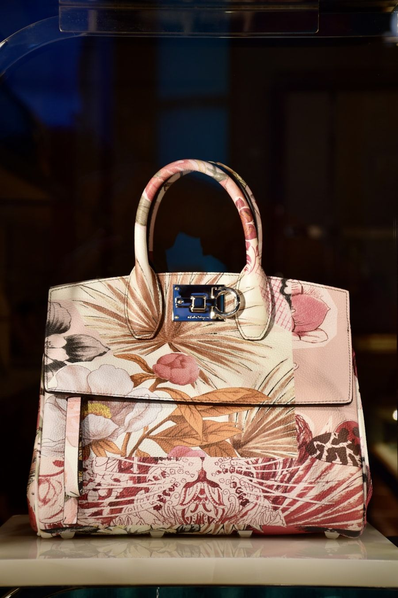
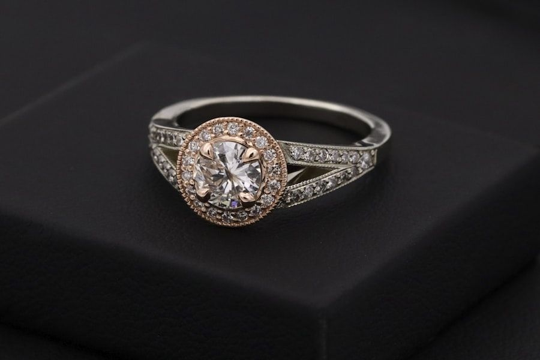
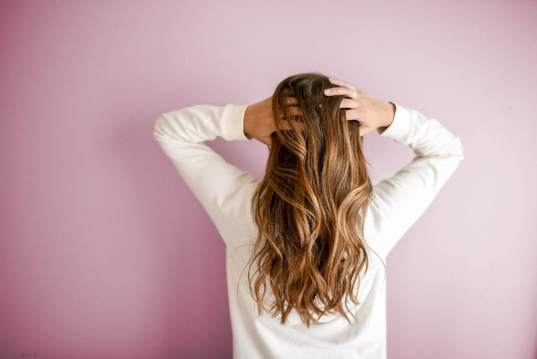
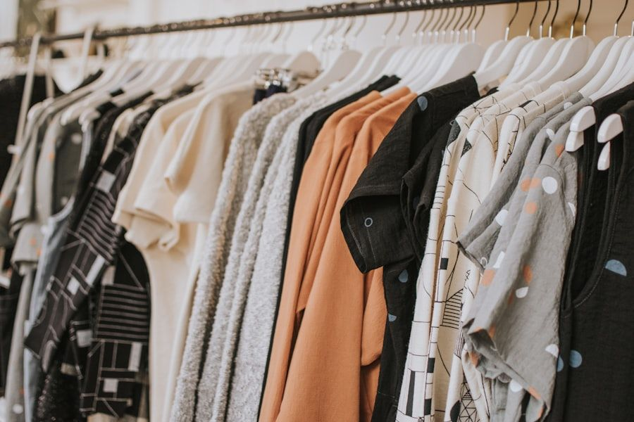
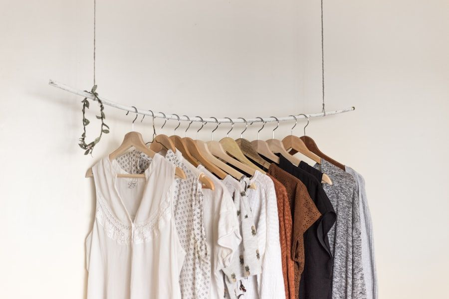

Architectural Form Meets Luminous Metallic Artistry
Beyond transient fashion novelties. MetallicTote crafts heirloom-grade luxury tote bags from full-grain Italian calfskin, fused with vacuum-deposited 24-karat gold leafing, hand-waxed linen saddle stitching, and solid lost-wax brass hardware.

The Four Metallic Expressions of Haute Maroquinerie
Our tanneries in the Arno Valley combine centuries-old vegetable drumming with modern microscopic vapor metallurgy, achieving supple, flexible metallic membranes that breathe with the natural hide.

24K Aureum Leaf
Vapor-deposited pure gold leafing bonded at the molecular level, yielding a warm, radiant metallic luster that softens into a distinguished vintage patina over decades of wear.

Argento Chrome
High-gloss, reflective palladium-chrome finish on smooth French calfskin, creating an avant-garde liquid metal reflection suited for evening galas and gallery vernissages.

Patinated Bronzo
Hand-rubbed copper and antique bronze metallic pigments layered over rich vegetable-tanned leather, offering deep multi-dimensional tonal warmth and tactile grain texture.

Gunmetal Ruthenium
Smoky, industrial dark metallic sheen inspired by brutalist Milanese architecture. Complemented by hand-brushed matte ruthenium hardware with diamond-like carbon coating.
The MetallicTote Signature Collection
Each silhouette represents an exercise in architectural balance, weight distribution, and pure sculptural minimalism, handcrafted in limited annual editions.
The Aureum Maxi Tote
Oversized architectural tote engineered with dual reinforced handles, detachable zip pochette, and protective solid brass base feet.
The Argento Architectural
A razor-sharp geometric trapezoid tote in mirror silver leather with integrated magnetic closure and Italian suede interior lining.
The Bronzo Pleated Tote
Softly draped metallic bronze calfskin featuring origami side gussets, hand-braided shoulder straps, and hand-patinated hardware.
Artisanal Leather & Metallurgy Specifications
Examine the uncompromising technical thresholds governing our leather selection, foil lamination physics, and structural load-bearing integrity.
| Component | Artisanal Specification | Technical Threshold | Material Provenance | Performance Benefit |
|---|---|---|---|---|
| Tuscan Calfskin | Full-Grain Uncorrected Aniline | 1.6mm – 1.8mm Hide Caliper | Arno Valley Tannery Consortium, Italy | Supple tactile drape, organic breathability |
| Metallic Leafing | Vacuum Physical Vapor Deposition | 18 – 24 Micron Bonded Layer | Piazza Gold Leaf Foundry, Florence | Zero flaking, dynamic flex without cracking |
| Saddle Stitching | Fil Au Chinois Waxed French Linen | 7 Stitches Per Inch (SPI) Double Hand | Toulemonde Bochart, France | Indestructible seam integrity, won't unravel |
| Spine Reinforcement | Bonded Salpa & Organic Hemp Webbing | Supports > 12 kg (26.5 lbs) Load | Piedmont Heritage Mills, Italy | Preserves crisp architectural form for decades |
| Hardware Metallurgy | Lost-Wax Investment Cast Solid Brass | 5 Micron Heavy Palladium Electroplate | Artisan Foundry, Varese, Italy | Corrosion-resistant, heavyweight luxury feel |
The Triad of Handcrafted Perfection
Machine manufacturing can replicate shape, but only human hands can impart soul, tension balance, and eternal structural resilience.

Traditional Saddle Stitching
Sewn by hand using two needles on a single strand of beeswax-coated French linen thread. Unlike machine lock-stitching that unravels if one loop breaks, saddle stitching remains structurally sound for generations.

Micro-Beveled Skiving
Hide edges are hand-skived to fractional millimeter tolerances, ensuring that folded leather seams remain feather-light and pliable without creating bulky, rigid corners along tote gussets.

7-Layer Edge Burnishing
Every exposed raw leather edge receives seven hand-applied coats of mineral edge paint, individually heated, sanded with micro-abrasives, and beeswax-burnished to achieve a silky, glass-smooth seal.
The Milanese Maroquinerie Sanctuary
Tucked behind a quiet 18th-century courtyard in Milan's historic fashion district, our atelier is a temple dedicated to slow, unhurried leathercraft. Here, master artisans with decades of heritage experience hand-cut, assemble, and inspect every bag.
With only thirty-five bespoke commissions accepted per calendar month, our patrons receive individual attention from our creative director, personalizing every detail from handle drop lengths to custom monogrammed hot-foil linings.
From Milan Fashion Week to Timeless Daily Carry
While metallic accessories were once reserved strictly for formal evening galas, MetallicTote's architectural minimalist lines reframe metallic leather as an assertive day-to-night neutral.
Pair the Aureum Maxi Tote with structured tailoring, crisp ivory cashmere, or a fluid monochromatic trench coat. The warm reflection of metallic gold infuses everyday minimalism with effortless sculptural glamour.

Words from Discerning Collectors
Read how international luxury collectors, fashion editors, and bespoke patrons describe their MetallicTote heirloom pieces.
"The Aureum Maxi Tote is a triumph of proportion and restraint. The gold leafing has none of the garish brassiness of commercial foils—it possesses the warm, luminous glow of antique Italian jewelry."
"I have carried my Argento Architectural Tote across three continents over the past two years. The saddle-stitching is bulletproof, and the leather has softened into an exquisite, liquid-silver glove."
"The bespoke concierge experience on Via Monte Napoleone was unforgettable. To watch the master artisan skive the hide and custom-cast the brass handles made acquiring this tote a genuine artistic journey."
Frequently Asked Questions
Key details regarding hide selection, bespoke commissioning, international insured delivery, and lifetime craftsmanship warranties.
Commission Your Heirloom Metallic Tote
Connect with our Milanese concierge to select custom metallic leather swatches, personalize hardware metallurgy, and initiate your bespoke artisanal commission.